山中越旧道を辿る
京都と大津の往来において中心的な役割を果たすのは、かつての東海道、国道1号でしょう。また、その旧道にあたる府道143号（三条通）も多くの車が通います。これらは山科盆地を経由して両都市を結んでいますが、東山を一気に越えていく車道として、京都府道・滋賀県道30号「下鴨大津線」があります。下鴨大津線は、一般に「山中越」とも呼ばれ、東海道に対する裏道として古くは太平記の時代から使われてきました。山中越は、今でこそ片道1車線の車道として整備されていますが、その原型となった「旧道」が今もひっそりと残っています。この記事では、道の来歴を地図の比較によって考えるとともに、滋賀側の旧道を中心に、その現在の姿を実地調査していきます。
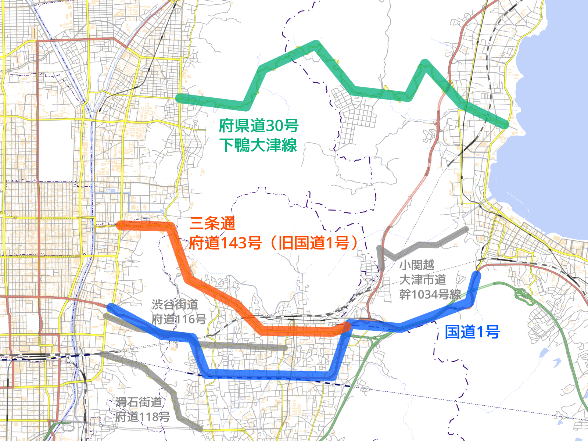
1. 山中越の姿
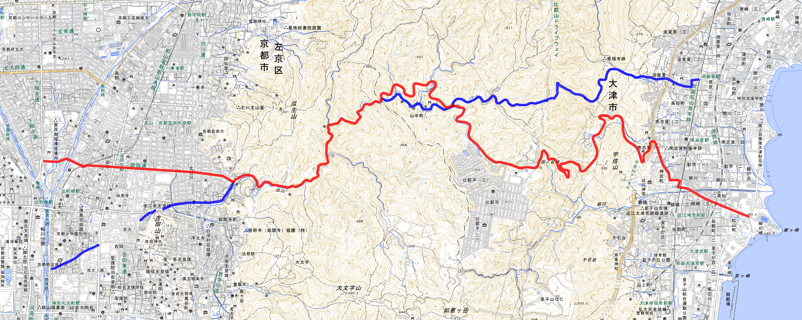
山中越は、文字通り「山中」集落（現在の大津市山中町）を通じて京と近江を結ぶ道でした。現在「山中越」と公称されるのは、地図に赤線で示した京都府道・滋賀県道30号「下鴨大津線」です。この道は下鴨神社の南に端を発し、北白川までの区間は御蔭通とも呼ばれます。山を登り、府県境に達すると山中町に出会いますが、下鴨大津線は集落を迂回して南東へ進みます。比叡平を過ぎると田ノ谷峠を越え、宇佐山を巻きつつ南滋賀の町に下りて、近江神宮の前からしばらく進んだところで終点となっています。
これに対して、青線で示したのが山中越の旧道とされる道です。京都府側の北白川から府県境までの区間は、現在も古道をほぼそのままなぞっているようで、少なくとも1889年以降は大きな変化がありません（假製地形圖「大津」を参照）。それに対して、北白川から西と、滋賀県側の区間はどちらも大きくルートを変えています。まず、北白川以西の旧道は志賀越道とも呼ばれます。志賀越道は荒神口を起点として北東に伸びる道で、現在では京都大学や今出川通に分断されつつも、下鴨大津線との丁字路までその道筋を辿ることができます。滋賀県側では、まず山中町内を通るルートが旧道に当たり、町内を抜けると旧道は新道を跨いで北東に続きます。谷筋を進んでいくと志賀峠に至り、それを越えると崇福寺跡を経て滋賀里へと下っていました。
続いては、京都府側と滋賀県側の旧道の来歴について、それぞれ見てみることにしましょう。
2. 京都府側旧道について
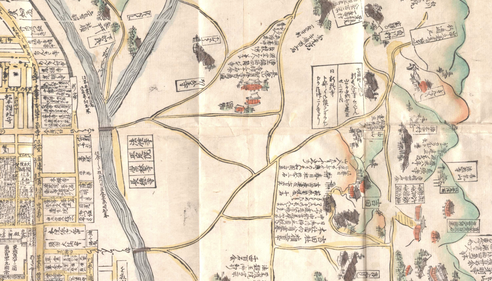
古地図を見てみましょう。遡って17世紀、1696年の「京大繪圖（きょうおおえず）」です。鴨川右岸に「荒神口」「かうぢんくち」とあり、そこから橋を渡って北東に伸びていく道を見て取れます。道の先には「山中こへ是ゟしが坂本へ行道也」と書かれており、山中越そのものであることが分かります。しかし、この道は時代が降るにつれてメインストリートから外れていきました。
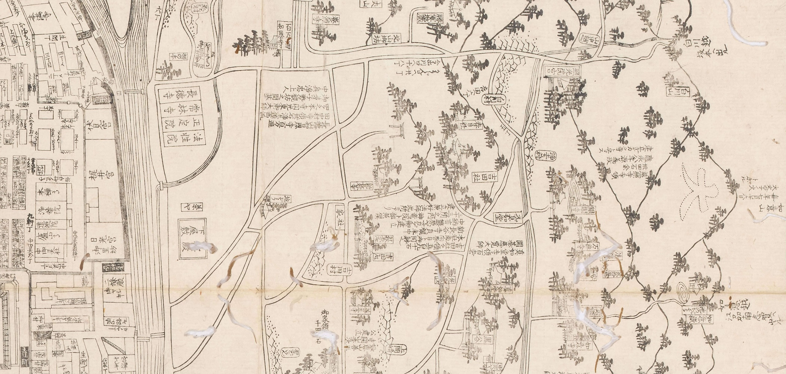
先ほどの地図から1世紀以上が経ち、1832年に出版された「京町繪圖細見大成」では、「今出川口」から来た道がさらに東まで開通しています。荒神橋から志賀越（地図では「白川越」）にまっすぐ繋がる道は判然とせず、橋の少し北から伸びる道が今出川筋に合流するように描かれています。
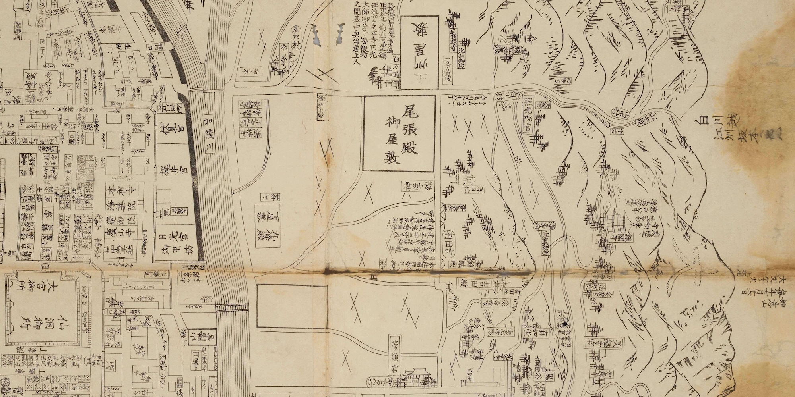
さらに36年が経った1868年に改正された「京町繪圖細見大成」を見ると、これまで（本来の）志賀越道が通っていた場所に 「尾張殿御屋敷」が建てられてしまっています。もはや主要なルートとしては機能しておらず、道を塞いで（迂回させて）しまっても問題なかったということでしょう。
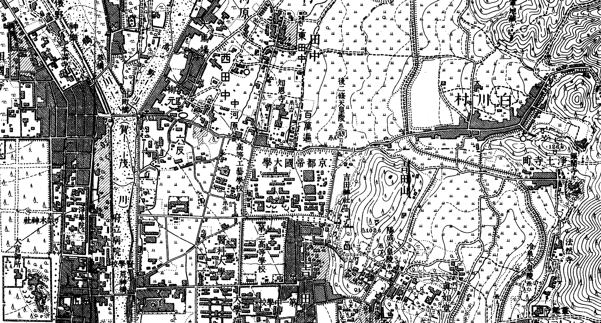
明治時代に入ると、近代測量による正確な地形図が整備されるようになりました。1909年の測量に基づく正式図「京都北部」を見てみると、荒神橋から吉田山北までの志賀越道は現在とほぼ同じ形になっているのが分かります。白川村を抜けて志賀越へと向かう道は出町橋からのルートが主軸になり、荒神橋からのルートは目立ちません。
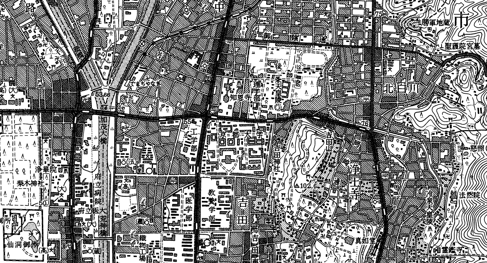
戦後になり、1961年の2万5千分1地形図「京都東北部」に見える町の姿はほとんど2026年現在と同じです。この頃になると今出川通が開通し、志賀越の道はさらに分断されるようになりました。また、御蔭通の開通も重要です。この版の地図では道路への網掛けは「舗装部」であることを表します。志賀越から来た舗装路は、直進すればかつての街道へと入っていくところを右折して、御蔭通へと続いています。旧白川村の区間も、いよいよ志賀越のメインルートから外れました。
3. 滋賀県側旧道について
さて、滋賀県側の旧道はほとんど山の中にあります。適当な古地図が見当たらないため、測量地図を見比べてみることにします。
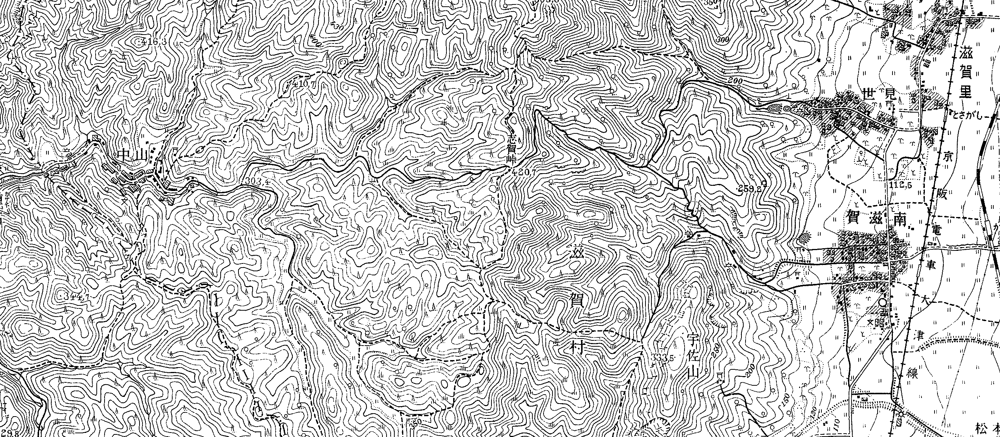
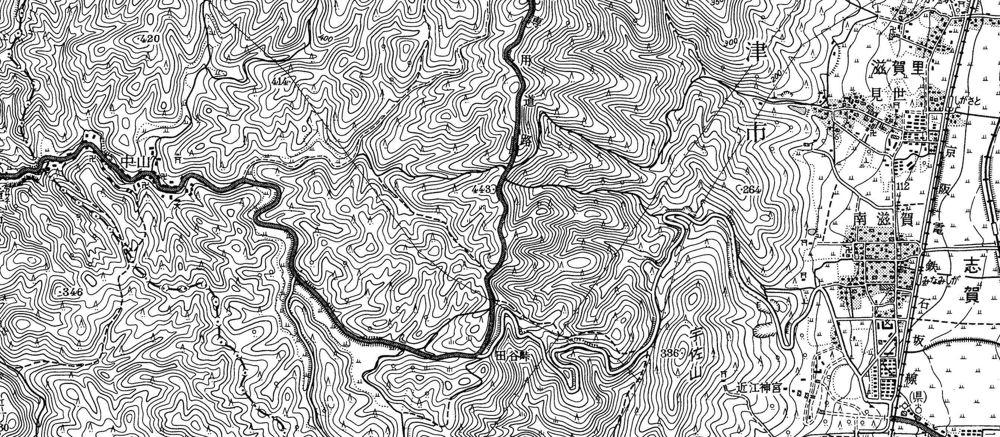
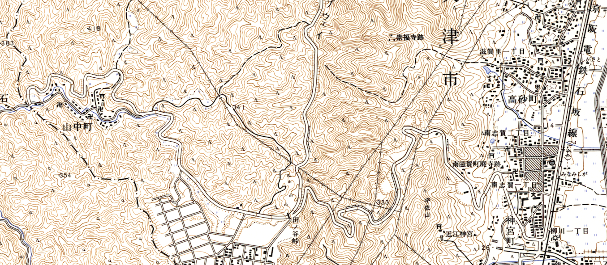
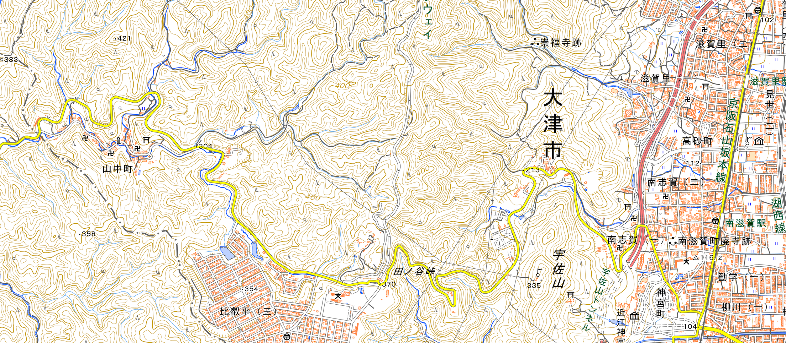
2026: 地理院地図より
1931年の陸地測量部地図では中央に「志賀峠」という注記があり、峠の東西に道幅一米以上の町村道が伸びています。宇佐山を北に巻いて南滋賀に出る、現在の下鴨大津線に繋がる道筋も、狭く（大部分が破線表記）急勾配ながら見てとることができます。
その後、1934年に比叡平と田ノ谷峠を通る新道が開通します[1]。これが概ね現在の下鴨大津線であり、山中越とも呼ばれる車道です。しかし、この道路はなかなか地図に反映されず、地理院地図（やその前身）にこの道路が初めて描かれたのは1961年のことになるようです。この頃にはすでに比叡山ドライブウェイも開通しており（1958年）[2]、それも同時に反映されています。この時点では、志賀峠を経由する「荷車道」（1.0m以上1.6m未満）も併せて描かれています。
1970年には山中町内を迂回するバイパスが開通し[3] [4]、現在の下鴨大津線の姿が完成しますが、翌々1972年の地図で志賀峠に目を向けてみると「小道」（1.5m未満）の表記すらも消えてしまっています。東からの道は辛うじて途中まで来ていますが、峠までは描かれていません。新道開通から約40年が経過し、旧道はすでに街道としての機能を失っていたということでしょうか。とはいえ、同時期の登山地図では旧来の道が描かれており、全く消失していたという訳ではなさそうです。
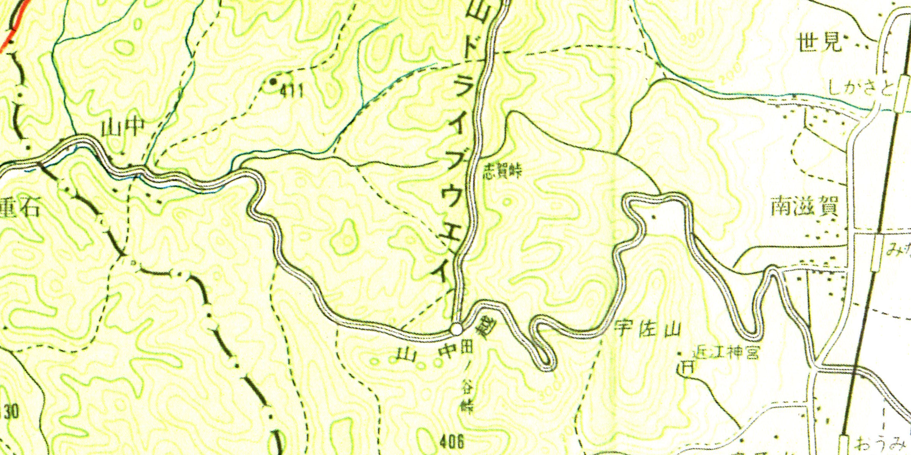
2026年現在の地図では西からの道の表記が復活しています。ただ代わりに東側の道が大きく後退しており、文字通り一長一短というところです。
参考文献：
では、山中越の旧道は、現在どうなっているのでしょうか。京都府側の区間は市街地にあり、容易に探索できます。そこで、滋賀県側の区間を調べてみることにしましょう。はじめに、先の新旧道のルートを示した地図と赤色立体地図を重ね合わせたものを示しておきます。通常の地図では道のりが表示されていない部分もありますが、赤色立体地図を見るとほぼ全線にわたって路盤（白い部分＝平坦地）をはっきりと見てとることができます。
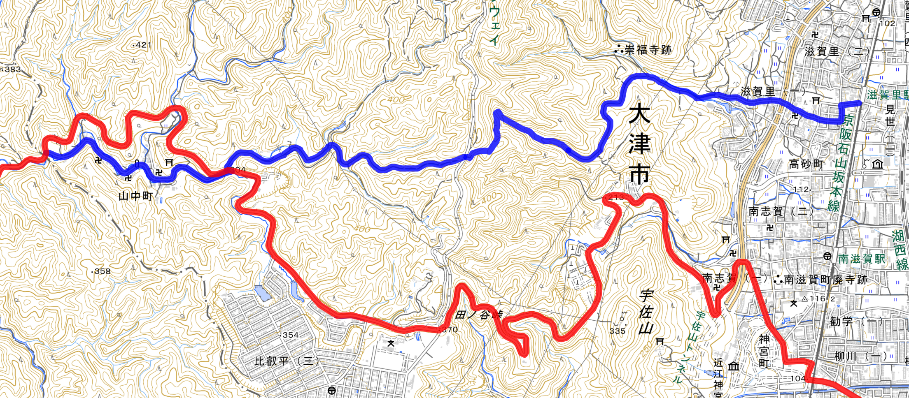
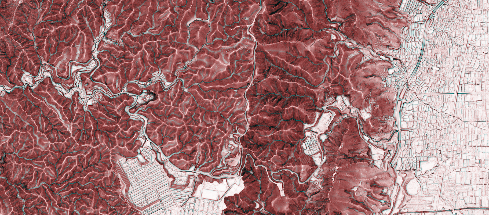
では、その路盤を実地で見ていきましょう。
4. 滋賀県側旧道の実地調査
5. 滋賀県道「大津下鴨線」と行政上の旧道
さて、ここまで「山中越旧道」が青線のルートを指すことを前提に話を進めてきました。実際、これまで各所で公開されているいくつかの探索レポート*は（概ね）青線のルートをなぞっています。しかし、これはある意味では正しくないかもしれません。
* たとえば次に挙げるものがあります。
- 山中越え（志賀越え） - いにしえの旧街道を訪ねて一人旅
- 志賀越 - okaokaclub
- 志賀（山中）越道を歩く - 街道歩き旅
- 志賀越道を歩く - 京都大学新聞
- 滋賀の山越え（志賀峠）＜パート２＞ - 自然と山岳を
- 【街道シンポジウム】志賀越道を歩く - ボラボラわーるど
- 志賀越え（山中越え）馬頭観音 - kumakumo (YamaReco)
- 【徒歩で大津→京都①】旧山中越・志賀越道を歩く！志賀峠に驚く！ - 【滋賀県】未だ定まらざる (YouTube)
いわゆる山中越、「府県道30号下鴨大津線」が行政上どのように取り扱われてきたかを調べてみましょう。この県道は1958年の滋賀県告示で路線認定されています。しかし、これは戦後の道路法制下におけるもので、かつ新道を認定したものです。戦前の旧道路法は1919年に成立しており、下鴨と大津を結ぶ路線＝旧道も1923年に県道「大津下鴨線」として路線認定されています（大正12年4月1日滋賀県告示第134号）。
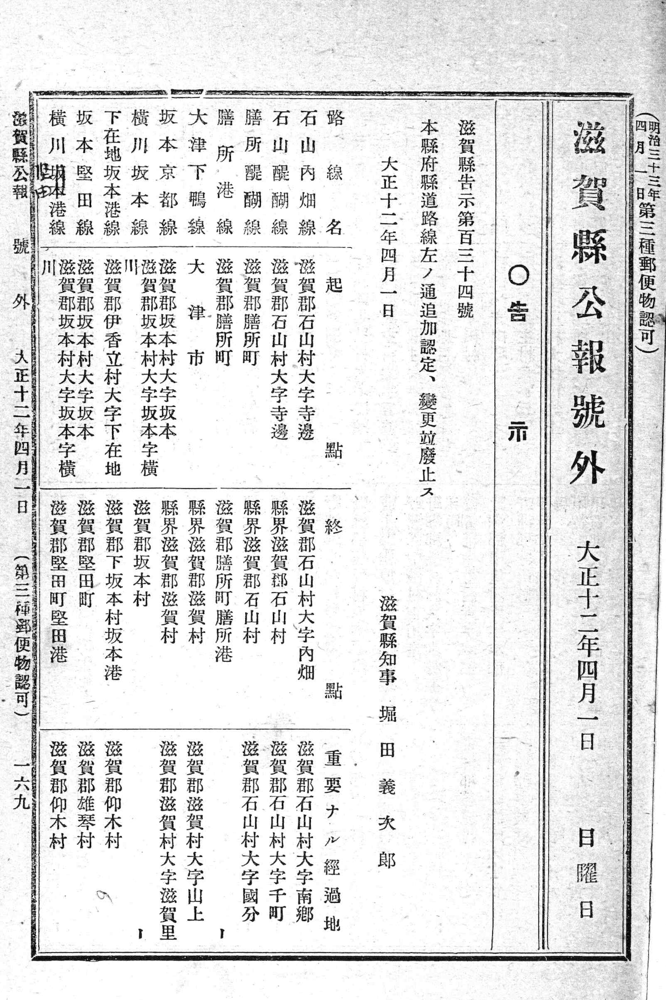
ここでは、起点が「大津市」と定められているのが分かります。注意すべきなのは、当時の大津市はまだ滋賀村を合併していないという点です。当時の市域は概ね現在の大津京駅以南であり、現在の下鴨大津線が「柳が崎」（旧滋賀村内）を終点としていることを考えれば、ルートの違いは明白です。とはいえ、これだけでは正確な道筋はわかりません。関連する告示を探してみると、1935年に大津下鴨線の区域が変更されていることが分かりました（昭和10年滋賀県告示第5号）。これは1934年の新道開通を反映したものではないでしょうか？
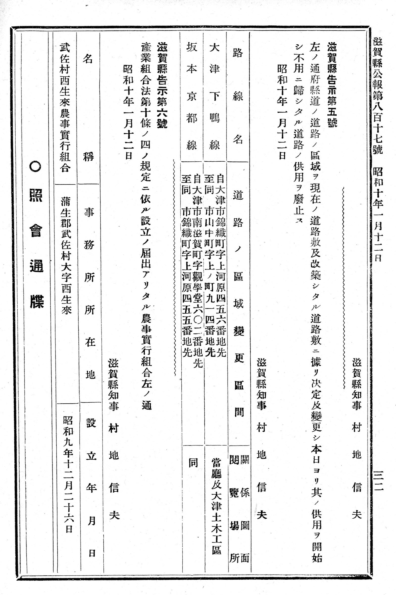
この公示では、「關係圖面閱覽場所」が指定されています。この図面を見れば、「區域變更」以前の道路敷、すなわち行政上の旧道がどこを通っていたかが分かるかもしれません。ということで、滋賀県立公文書館に図面の利用請求をしてみました。そうして得られたのが「大津下鴨線一般平面圖」です。
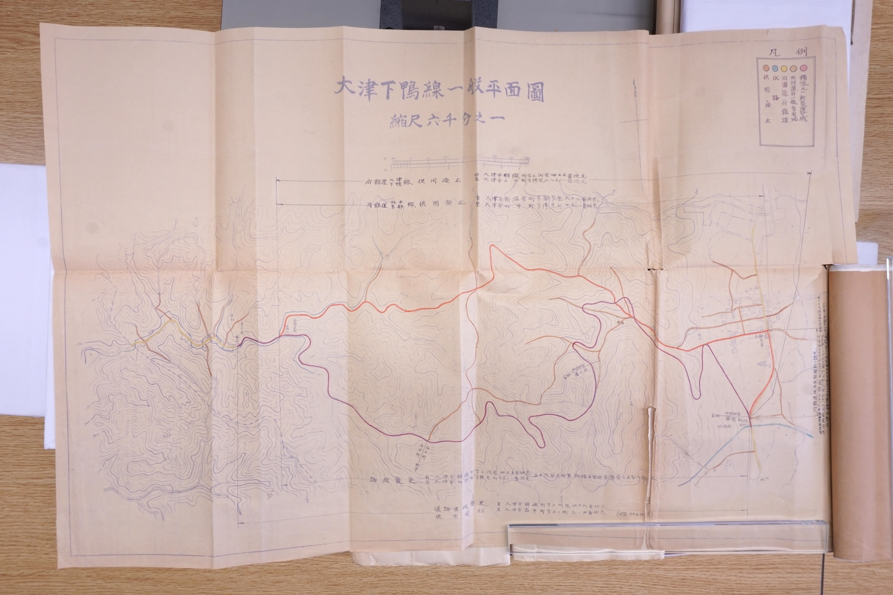
なかなか見にくいですが、図の上側を走る赤線が旧道（「供用廃止」）、下側を走る紫線が新道（「擴張又ハ新築道路區域」）です。これを見ると、旧道は、前章まで見てきた北に曲がる「旧道」とは異なり、新道とほとんど同じ場所で平地に出ていたことが分かります。この道は、なるほど1931年の地図にも、部分的には1961年や2026年現在の地図にも描かれていることが確認できます。
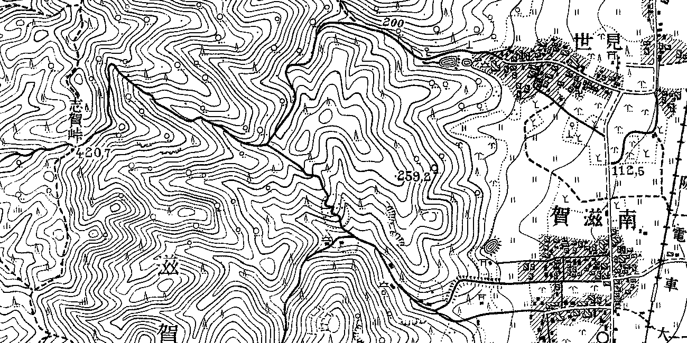
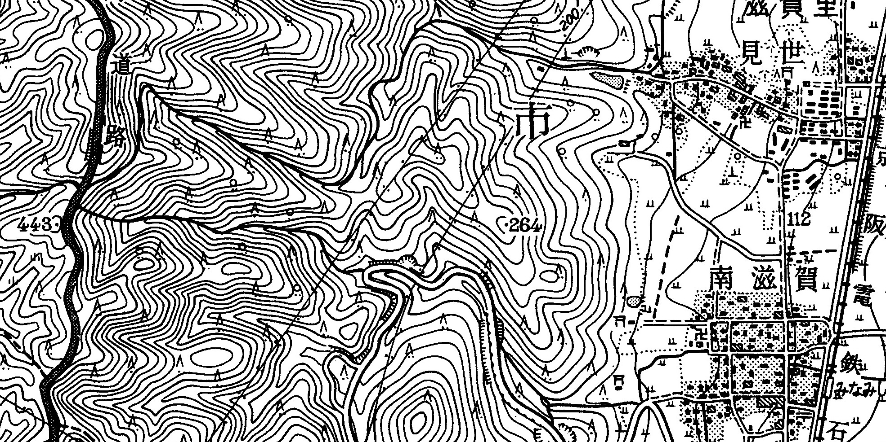
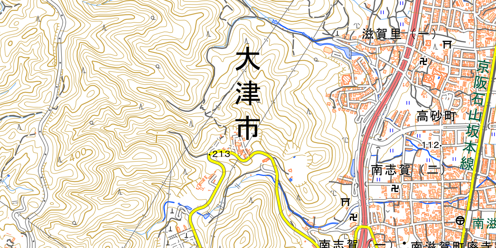
2026: 地理院地図より
また、前掲の1974年の登山地図にもこのルートが見えます。
より古い地図として、1883年の『近江国滋賀郡誌』の「附図」も参照できます。特に関わりの深い「見世村」「南滋賀村」の2枚を載せました。見世村と南滋賀村は、見世村が北になる形で接しています（見世村はのちの滋賀里村の一部）。
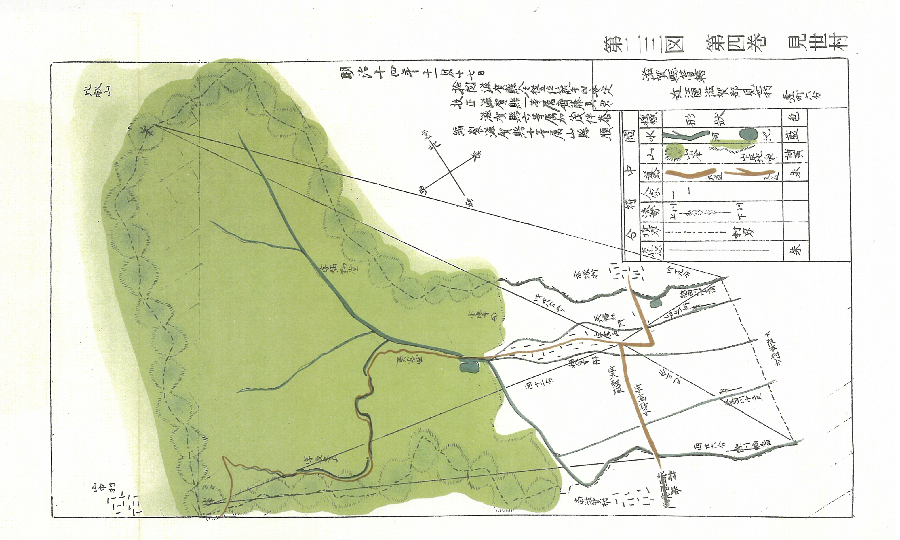
（30度ほど西側に傾いている）
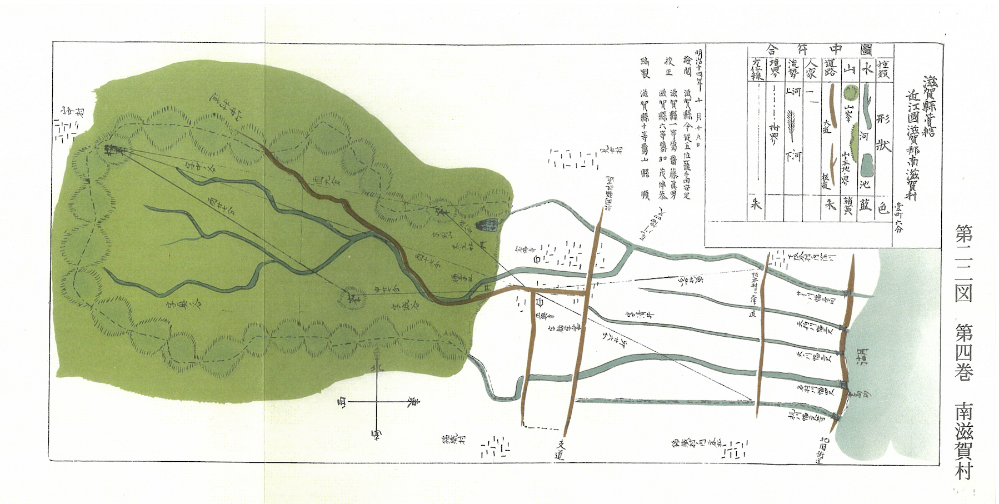
見世村の図に書かれている「西京道」が、いわゆる旧道に当たる道のように見えます。そしてそれに繋がるように南滋賀村の図に書かれているのが「山中村道」であり、こちらが行政上真の「旧道」であることになります。
6. 行政上の旧道の実地調査
7. 新道の原形となった道
前章までで見たように、いわゆる旧道から現道に繋がる、行政上の旧道が宇佐山の北にあることが分かりました。この付近の地図を見直してみましょう。
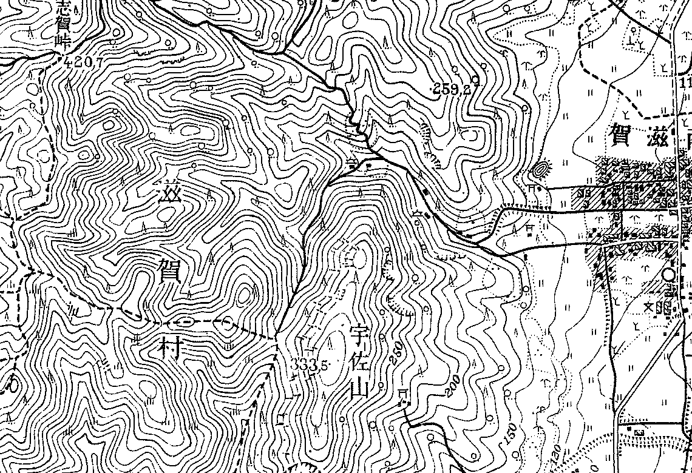
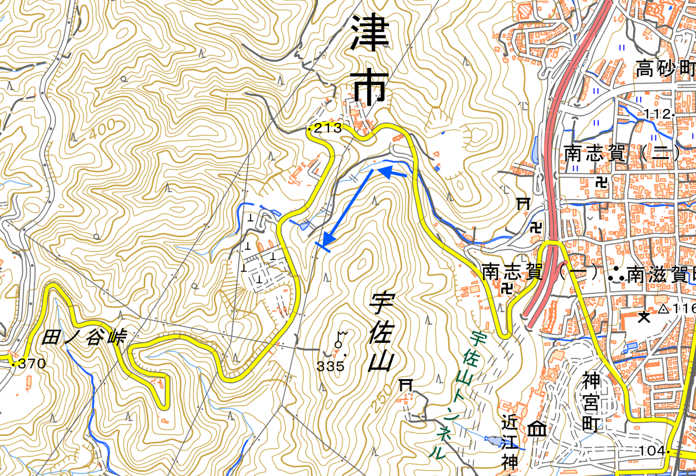
新旧の地図を見比べると、2026年の地図で黄色の線として描かれている現道に対して、その原型となったであろう道が、1931年の地図で黒い実線・破線として田ノ谷峠の方まで描かれているのが分かります。そしてその道は、宇佐山のすぐ北の区間に限って言えば、2026年の地図でも描かれているように見えます。尤も、1931年の道はひたすらに谷筋をなぞっていますが、現在は左岸へ右岸へ蛇行しています。川には堰が設けられてしまっており、かつての道そのものは消失していそうです。しかし、現在の道は、峠どころか宇佐山西麓にも届かず、途中で途切れてしまっているようです。どうなっているのでしょう？
8. 新道の原形となった道の実地調査
9. おわりに
この記事では、三つの道を見てきました。まず、現在の府県道30号下鴨大津線（山中越）の旧道としてよく参照される、山中町から志賀峠を経て崇福寺・滋賀里方面に抜けるいわゆる旧道。それに対して、志賀峠から崇福寺に向かわず、現在の車道（新道）の方へと進んで南滋賀に抜ける行政上の旧道。そして、新道それ自体の原型となったと思われる、宇佐山西麓の道の名残。一つ目のいわゆる旧道は、一部は産業用の林道として、また一部はハイカー向けの登山道として、現在もある程度は維持の手が入っています。それに対して、行政上の旧道は、分岐から馬頭観音までは参拝者向けに維持されているようですが、その先はしばらく寸断されてしまっています。宇佐山西麓の道も、治水作業用に維持されているだろう部分から先は、利用可能な道としては姿を消しています。ありし日の山中越での往来を偲ぶことができる景色は、いつまで見ることができるのでしょうか。
10. おまけ
おまけとして、（大阪）朝日新聞滋賀版で山中越を取り上げた記事の書き起こしをまとめたものを付けておきました。山中越の道路改良について話し合われた1933年（昭和8）の三府県協議会の報道から、同年の着工、翌年の竣工に至るまでの経過を知らせる一連の記事を中心に、1954年（昭和29）に連載記事の一回として山中越が取り上げられたときの記事も含めています。
他の新聞、京都日日新聞、京都日出新聞やそれらの後身たる京都新聞、（大阪）毎日新聞は扱っていませんが、それらの新聞にも山中越道路の歴史を知る上で有用な記事が掲載されている可能性があります。例えば1958年4月23日の京都新聞では山中越道路の混雑を報じているようですが（山中越え狭すぎる 【京都・大津比叡山線番外】 - 青いバス停）、同主題の記事は大阪朝日新聞には見つかりませんでした。